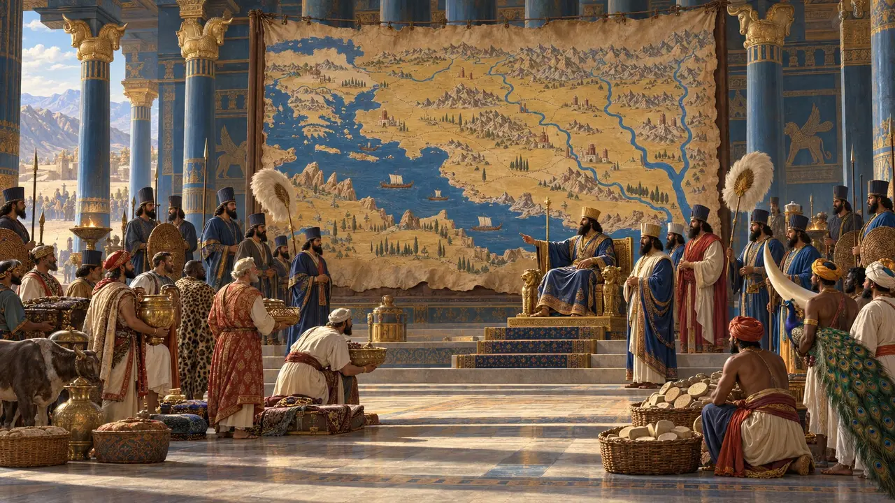
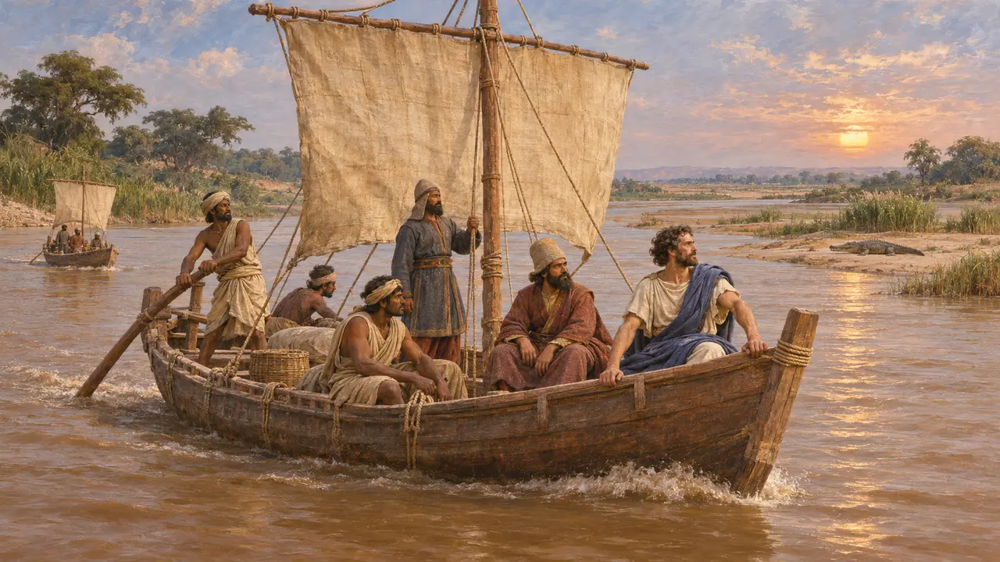
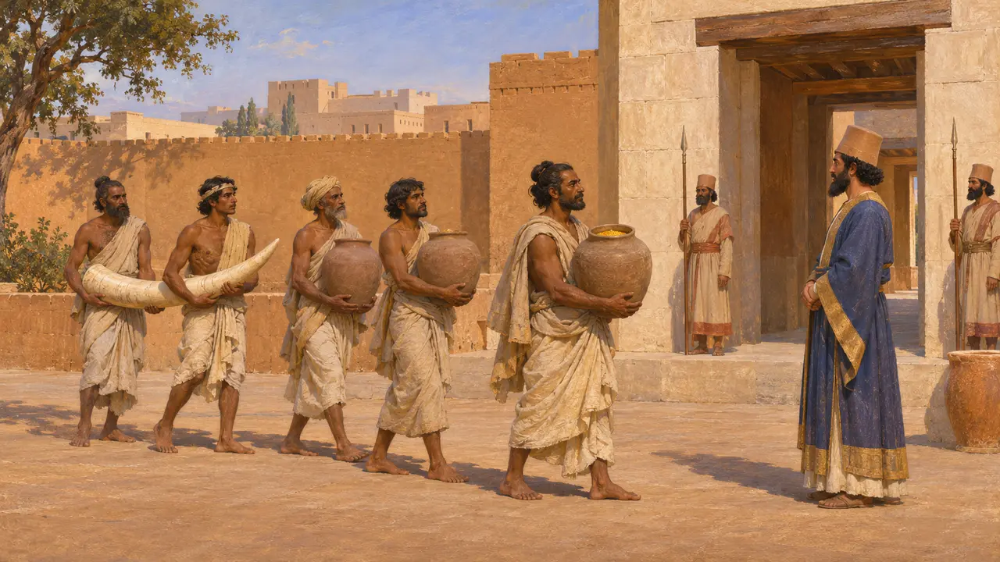
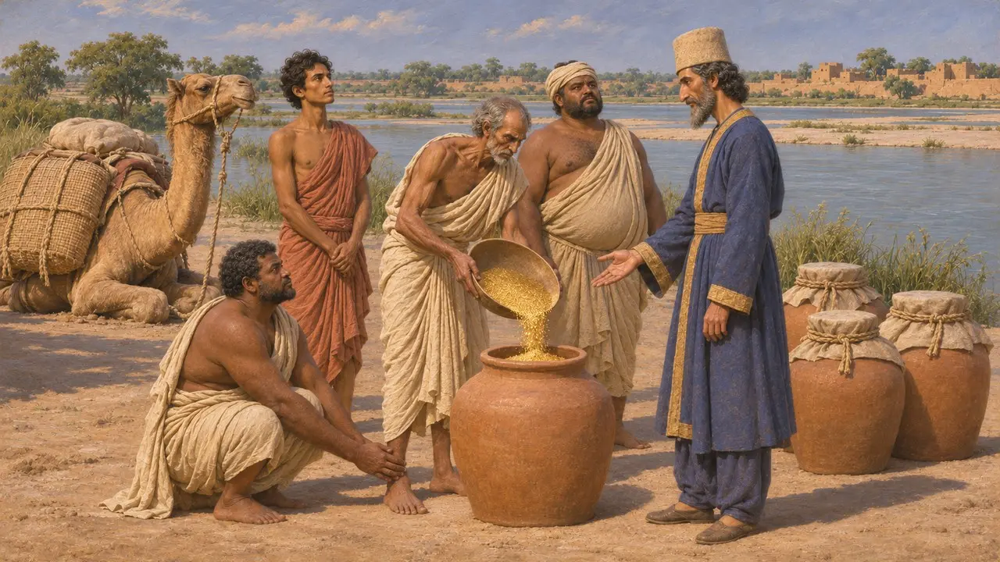
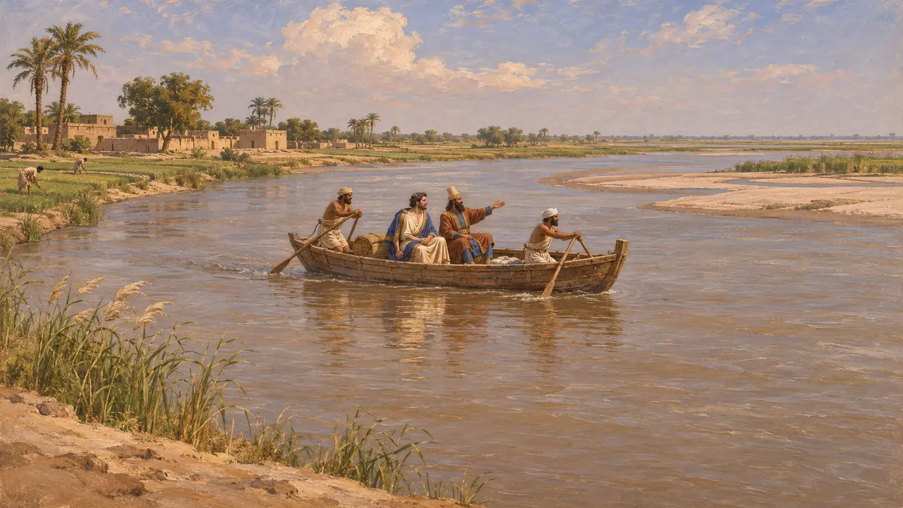

O rio Indo
O grande rio de Hindush, explorado por Cílax a mando de Dario, por volta de 517 AEC
No jogo: Nível 5: A Carta, Mícale
O Indo corre das montanhas do noroeste até o Mar da Arábia. Seu vale tornou-se a província persa de Hindush sob Dario. Heródoto diz que Dario enviou Cílax de Carianda rio abaixo até o mar, depois conquistou os indianos e passou a usar a rota marítima.
No jogo: O Indo é o caminho da viagem de Cílax na fase de Susa: o parceiro comercial da Índia permanece fechado até que Cílax o tenha navegado, e seu marfim chega então para o palácio.

A viagem rio abaixo
Relato antigoHeródoto diz que Dario desejava saber onde o Indo, um segundo rio com crocodilos depois do Nilo, encontrava o mar. Ele enviou navios com Cílax de Carianda, que partiu de Caspatiro, na Páctice, desceu o rio, navegou mar adentro rumo ao oeste e chegou ao Egito no trigésimo mês.
Herodotus 4.44

Hindush nos registros
Nos registrosAs inscrições de Dario incluem Hindush entre as suas terras, embora a inscrição de Behistun, de cerca de 520 AEC, não a inclua. Os relevos de Persépolis mostram o seu povo trazendo jarros, provavelmente de pó de ouro, e a Carta de Susa diz que o marfim vinha de Hindush, Cuxe e Aracósia.
DPh; DNa; DSf

Pó de ouro e tributo
Relato antigoHeródoto diz que os indianos pagavam 360 talentos de ouro em pó por ano, o maior tributo de todos os povos. Ele conta a história de formigas gigantes que escavam areia aurífera, a qual os indianos roubam em camelos velozes. As formigas são um relato de viajante; o tributo em ouro combina com as jarras nos relevos.
Herodotus 3.94, 3.98-105

Até onde o Rei governou a leste
DisputadoDebate-se quanto do vale do Indo os persas controlaram. A maioria dos historiadores pensa que Hindush abrangia o médio e o baixo Indo, com Gandara ao norte como uma terra separada. Alguns também duvidam da rota de volta por mar da viagem, já que o próprio livro de Cílax se perdeu.
P. Briant, From Cyrus to Alexander, 2002
Fontes
- Herodotus 3.94, 3.98-106, 4.44
- DPh, DNa, DSf (Kent, Old Persian)
- P. Briant, From Cyrus to Alexander, 2002